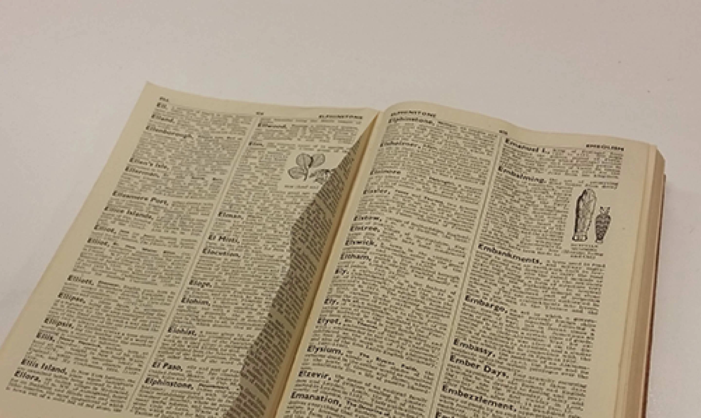

Page not found
The page may have moved, be temporarily unavailable, or the address may not be correct.
What to do next
-If you typed in the web address, check that you have typed it correctly (including the end of the address, which may end in / or .html).
-Use the search on the top right of this page to look for a keyword related to what you are looking for. This will help if the page has moved.
-Check if there is a service outage on our Service Status page.
If these options don't help, you can contact our helpdesk by calling +61 (2) 9351 6000 or emailing support@sydney.edu.au.
Error 404
